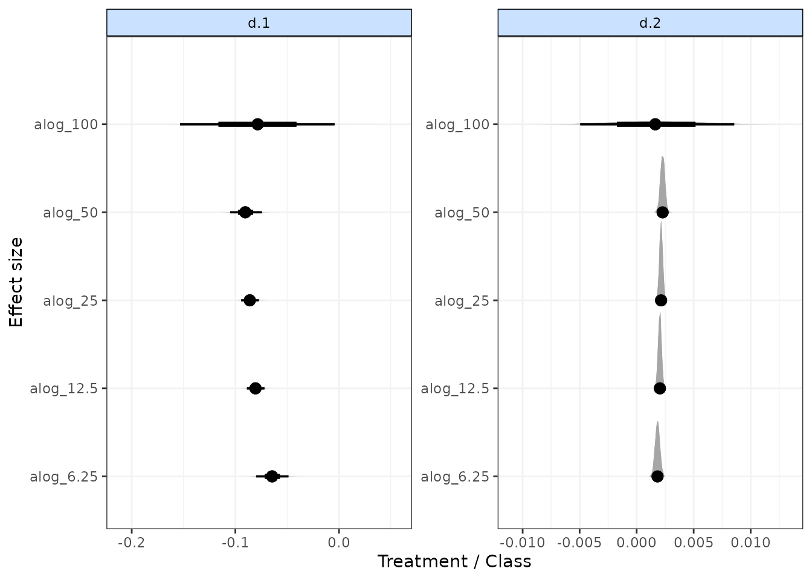
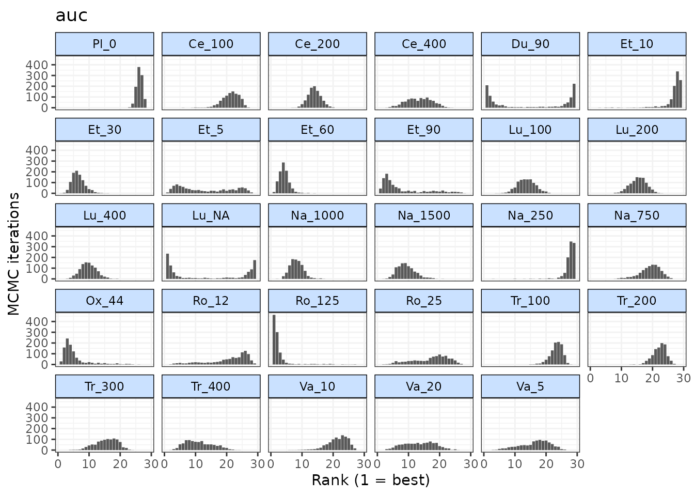
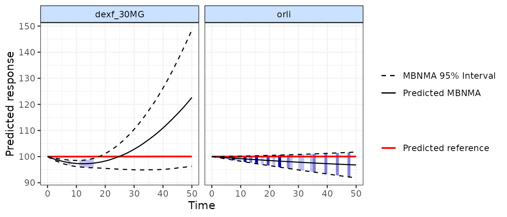
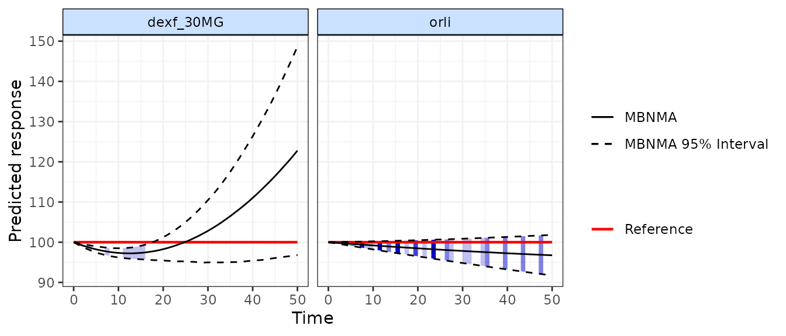

MBNMAtime for time-course Model-Based (Network) Meta-Analysis
Hugo Pedder
2023-03-14
MBNMAtime.RmdIntroduction
This vignette demonstrates how to use MBNMAtime to
perform meta-analysis of studies with multiple follow-up measurements in
order to account for time-course relationships within single or multiple
treatment comparisons. This can be performed by conducting Model-Based
(Network) Meta-Analysis (MBNMA) to pool relative treatment effects.
MBNMA models therefore estimate treatment effects over time (e.g. days,
weeks, months).
Including all available follow-up measurements within a study makes use of all the available evidence in a way that maintains connectivity between treatments and explains how the response of the treatment changes over time, thus accounting for heterogeneity and inconsistency that may be present from “lumping” together different time points in a standard Network Meta-Analysis (NMA). All models and analyses are implemented in a Bayesian framework, following an extension of the standard NMA methodology presented by (Lu and Ades 2004) and are run in JAGS (version 4.3.0 or later is required) (JAGS Computer Program 2017). For full details of time-course MBNMA methodology see Pedder et al. (2019), and a simulation study exploring the statistical properties of the method is reported in Pedder et al. (2020).
This package has been developed alongside MBNMAdose, a
package that allows users to perform dose-response MBNMA to allow for
modelling of dose-response relationships between different agents within
a network. However, they should not be loaded into R at the same
time as there are a number of functions with shared names that
perform similar tasks yet are specific to dealing with either
time-course or dose-response data.
Within the vignette, some models have not been evaluated, or have been run with fewer iterations than would be necessary to achieve convergence and produce valid results in practice. This has been done to speed up computation and rendering of the vignette.
Workflow within the package
Functions within MBNMAtime follow a clear pattern of
use:
- Load your data into the correct format using
mb.network() - Specify a suitable time-course function and analyse your data using
mb.run() - Test for consistency using functions like
mb.nodesplit() - Examine model results using forest plots and treatment rankings
- Use your model to predict responses or estimate treatment effects at
specific time-points using
predict()
At each of these stages there are a number of informative graphs that can be generated to help understand the data and make decisions regarding model fitting.
Datasets Included in the Package
Pain relief in osteoarthritis
osteopain is from a systematic review of treatments for
pain in osteoarthritis, used previously in Pedder et al. (2019). The outcome is pain measured on a
continuous scale, and aggregate data responses correspond to the mean
WOMAC pain score at different follow-up times. The dataset includes 30
Randomised-Controlled Trials (RCTs), comparing 29 different treatments
(including placebo). osteopain is a data frame in long
format (one row per time point, arm and study), with the variables
studyID, time, y,
se, treatment and arm.
| studyID | time | y | se | treatment | arm | treatname |
|---|---|---|---|---|---|---|
| Baerwald 2010 | 0 | 6.55 | 0.09 | Pl_0 | 1 | Placebo_0 |
| Baerwald 2010 | 2 | 5.40 | 0.09 | Pl_0 | 1 | Placebo_0 |
| Baerwald 2010 | 6 | 4.97 | 0.10 | Pl_0 | 1 | Placebo_0 |
| Baerwald 2010 | 13 | 4.75 | 0.11 | Pl_0 | 1 | Placebo_0 |
| Baerwald 2010 | 0 | 6.40 | 0.13 | Na_1000 | 2 | Naproxen_1000 |
| Baerwald 2010 | 2 | 4.03 | 0.13 | Na_1000 | 2 | Naproxen_1000 |
Alogliptin for lowering blood glucose concentration in type II diabetes
alog_pcfb is from a systematic review of
Randomised-Controlled Trials (RCTs) comparing different doses of
alogliptin with placebo (Langford et al.
2016). The systematic review was simply performed and was
intended to provide data to illustrate a statistical methodology rather
than for clinical inference. Alogliptin is a treatment aimed at reducing
blood glucose concentration in type II diabetes. The outcome is
continuous, and aggregate data responses correspond to the mean change
in HbA1c from baseline to follow-up in studies of at least 12 weeks
follow-up. The dataset includes 14 Randomised-Controlled Trials (RCTs),
comparing 5 different doses of alogliptin with placebo (6 different
treatments in total). alog_pcfb is a data frame in long
format (one row per time point, arm and study), with the variables
studyID, clinicaltrialGov_ID,
agent, dose, treatment,
time, y, se, and
N.
| studyID | clinicaltrialGov_ID | agent | dose | treatment | time | y | se | n |
|---|---|---|---|---|---|---|---|---|
| 1 | NCT01263470 | alogliptin | 0.00 | placebo | 2 | 0.00 | 0.02 | 75 |
| 1 | NCT01263470 | alogliptin | 6.25 | alog_6.25 | 2 | -0.16 | 0.02 | 79 |
| 1 | NCT01263470 | alogliptin | 12.50 | alog_12.5 | 2 | -0.17 | 0.02 | 84 |
| 1 | NCT01263470 | alogliptin | 25.00 | alog_25 | 2 | -0.16 | 0.02 | 79 |
| 1 | NCT01263470 | alogliptin | 50.00 | alog_50 | 2 | -0.15 | 0.02 | 79 |
| 1 | NCT01263470 | alogliptin | 0.00 | placebo | 4 | -0.01 | 0.04 | 75 |
Tiotropium, Aclidinium and Placebo for maintenance treatment of moderate to severe chronic obstructive pulmonary disease
A dataset from a systematic review of Randomised-Controlled Trials
(RCTs) for maintenance treatment of moderate to severe chronic
obstructive pulmonary disease (COPD) (Karabis et
al. 2013). Data are extracted from (Tallarita, De lorio, and Baio 2019). SEs were
imputed for three studies, and number of patients randomised were
imputed for one study (LAS 39) in which they were missing, using the
median standard deviation calculated from other studies in the dataset.
The outcome is trough Forced Expiratory Volume in 1 second (FEV1),
measured in litres and reported in each study arm as mean change from
baseline to follow-up. The dataset includes 13 RCTs, comparing 2
treatments (Tiotropium and Aclidinium) and placebo. copd is
a data frame in long format (one row per observation, arm and study),
with the variables studyID, time,
y, se, treatment, and
n.
| studyID | time | y | se | treatment | n |
|---|---|---|---|---|---|
| ACCORD I | 1 | -0.01 | 0.01 | Placebo | 187 |
| ACCORD I | 4 | -0.01 | 0.01 | Placebo | 187 |
| ACCORD I | 8 | -0.01 | 0.01 | Placebo | 187 |
| ACCORD I | 12 | -0.02 | 0.01 | Placebo | 187 |
| ACCORD I | 1 | 0.10 | 0.01 | Aclidinium | 190 |
| ACCORD I | 4 | 0.11 | 0.01 | Aclidinium | 190 |
Body weight reduction in obesity patients
obesityBW_CFB is from a systematic review of
pharmacological treatments for obesity. The outcome measured is change
from baseline in body weight (kg) at different follow-up times. 35 RCTs
are included that investigate 26 different treatments (16 agents/agent
combinations compared at different doses). obesityBW_CFB is
a dataset in long format (one row per time point, arm and study), with
the variables studyID, time, y,
se, N, treatment,
arm, treatname, agent and
class.
class is the class of a particular agent
(e.g. Lipase inhibitor)
| studyID | time | y | se | n | treatment | treatname | agent | class | |
|---|---|---|---|---|---|---|---|---|---|
| 27 | Apfelbaum 1999 | 4.35 | -1.00 | 0.39 | 78 | plac | placebo | placebo | Placebo |
| 28 | Apfelbaum 1999 | 4.35 | -1.59 | 0.38 | 81 | sibu_10MG | sibutramine 10MG | sibutramine | SNRI |
| 29 | Apfelbaum 1999 | 8.70 | -1.59 | 0.40 | 78 | plac | placebo | placebo | Placebo |
| 30 | Apfelbaum 1999 | 8.70 | -3.01 | 0.39 | 81 | sibu_10MG | sibutramine 10MG | sibutramine | SNRI |
| 31 | Apfelbaum 1999 | 13.04 | -2.25 | 0.41 | 78 | plac | placebo | placebo | Placebo |
| 32 | Apfelbaum 1999 | 13.04 | -4.76 | 0.40 | 81 | sibu_10MG | sibutramine 10MG | sibutramine | SNRI |
Serum uric acid concentration in gout
goutSUA_CFB is from a systematic review of interventions
for lowering Serum Uric Acid (SUA) concentration in patients with gout
[not published previously]. The outcome is continuous, and
aggregate data responses correspond to the mean change from baseline in
SUA in mg/dL at different follow-up times. The dataset includes 28 RCTs,
comparing 41 treatments (8 agents compared at different doses).
goutSUA_CFB is a data frame in long format (one row per arm
and study), with the variables studyID, time,
y, se, treatment,
arm, class and treatname.
| studyID | time | y | se | treatment | treatname | class |
|---|---|---|---|---|---|---|
| 1102 | 1 | 0.07 | 0.25 | RDEA_100 | RDEA594_100 | RDEA |
| 1102 | 1 | 0.02 | 0.18 | RDEA_200 | RDEA594_200 | RDEA |
| 1102 | 1 | 0.06 | 0.25 | RDEA_400 | RDEA594_400 | RDEA |
| 1102 | 2 | -0.53 | 0.25 | RDEA_100 | RDEA594_100 | RDEA |
| 1102 | 2 | -1.37 | 0.18 | RDEA_200 | RDEA594_200 | RDEA |
| 1102 | 2 | -1.73 | 0.25 | RDEA_400 | RDEA594_400 | RDEA |
Inspecting the data
Before embarking on an analysis, the first step is to have a look at
the raw data. Two features (network connectivity and time-course
relationship) are particularly important for MBNMA. To investigate these
we must first get our dataset into the right format for the package. We
can do this using mb.network(). This requires specifying
the desired treatment to use for the network reference treatment, though
one will automatically be specified if not given.
# Using the pain dataset
network.pain <- mb.network(osteopain, reference = "Pl_0")
#> Studies reporting change from baseline automatically identified from the data
print(network.pain)
#> description :
#> [1] "Network"
#>
#> data.ab :
#> studyID time treatment narm arm y se treatname
#> 1 Gottesdiener 2002 0 1 6 1 7.062 0.2221675 Placebo_0
#> 2 Gottesdiener 2002 0 6 6 2 7.009 0.1605568 Etoricoxib_10
#> 3 Gottesdiener 2002 0 7 6 3 6.756 0.1696070 Etoricoxib_30
#> 4 Gottesdiener 2002 0 8 6 4 6.873 0.1584104 Etoricoxib_5
#> 5 Gottesdiener 2002 0 9 6 5 6.686 0.1619320 Etoricoxib_60
#> 6 Gottesdiener 2002 0 10 6 6 6.854 0.1620282 Etoricoxib_90
#> fupcount fups
#> 1 1 5
#> 2 1 5
#> 3 1 5
#> 4 1 5
#> 5 1 5
#> 6 1 5
#> [ reached 'max' / getOption("max.print") -- omitted 411 rows ]
#>
#> studyID :
#> [1] "Gottesdiener 2002" "Schnitzer 2005_2" "Bensen 1999"
#> [4] "DeLemos 2011" "Gana 2006" "Kivitz 2001"
#> [7] "Kivitz 2002" "Fishman 2007" "Fleischmann 2005"
#> [10] "Lehmann 2005" "Schnitzer 2010" "Sheldon 2005"
#> [13] "Tannenbaum 2004" "Baerwald 2010" "Bingham 2007a"
#> [16] "Bingham 2007b" "Birbara 2006_1" "Birbara 2006_2"
#> [19] "Enrich 1999" "Leung 2002" "Schnitzer 2011LUM"
#> [22] "Sowers 2005" "Chappell 2009" "Chappell 2011"
#> [25] "Clegg 2006" "Markenson 2005" "McKenna 2001"
#> [28] "Puopolo 2007" "Sawitzke 2010" "Williams 2001"
#>
#> cfb :
#> [1] FALSE FALSE FALSE FALSE FALSE FALSE FALSE FALSE FALSE FALSE FALSE FALSE
#> [13] FALSE FALSE FALSE FALSE FALSE FALSE FALSE FALSE FALSE FALSE FALSE FALSE
#> [25] FALSE FALSE FALSE FALSE FALSE FALSE
#>
#> treatments :
#> [1] "Pl_0" "Ce_100" "Ce_200" "Ce_400" "Du_90" "Et_10" "Et_30"
#> [8] "Et_5" "Et_60" "Et_90" "Lu_100" "Lu_200" "Lu_400" "Lu_NA"
#> [15] "Na_1000" "Na_1500" "Na_250" "Na_750" "Ox_44" "Ro_12" "Ro_125"
#> [22] "Ro_25" "Tr_100" "Tr_200" "Tr_300" "Tr_400" "Va_10" "Va_20"
#> [29] "Va_5"This takes a dataset with the columns:
-
studyIDStudy identifiers -
timeNumeric data indicating continuous follow-up times (e.g. days, weeks, months) -
yNumeric data indicating the mean response for a given observation -
seNumeric data indicating the standard error for a given observation -
treatmentTreatment identifiers (can be numeric, factor or character) -
classAn optional column indicating a particular class that may be shared by several treatments. -
NAn optional column indicating the number of participants used to calculate the response at a given observation.
Additional columns can be included in the dataset. These will simply
be added to the mb.network object, though will not affect
the classification of the data.
mb.network then performs the following checks on the
data:
- The dataset has the required column names
- There are no missing values
- All standard errors (SE) are positive
- Observations are made at the same time points in all arms of a study (i.e. the data are balanced)
- Class labels are consistent within each treatment
- Studies have at least two arms
Unless otherwise specified, mb.network() will
automatically determine whether each study in the dataset is reported as
change from baseline or absolute - studies that include a measurement at
time=0 are assumed to report absolute values, whilst those
with no measurement at time=0 are assumed to be change from
baseline. This can also be explicitly specified by the user by including
a logical vector for the argument cfb in
mb.network() - TRUE indicates a study reports
change from baseline, and FALSE indicates that it reports
absolute values.
Finally, mb.network() converts the data into an object
of class("mb.network"), which contains indices for study
arms and follow-up measurements, and generates numeric values for
treatments and classes. By convention, treatments are numbered
alphabetically, though if the original data for treatments is provided
as a factor then the factor codes will be used. This then contains all
the necessary information for subsequent MBNMAtime
functions.
Network connectivity
Looking at how the evidence in the network is connected and
identifying which studies compare which treatments helps to understand
which treatment effects can be estimated and what information will be
helping to inform those estimates. A network plot can be generated which
shows which treatments have been compared in head-to-head trials.
Typically the thickness of connecting lines (“edges”) is proportional to
the number of studies that make a particular comparison and the size of
treatment nodes (“vertices”) is proportional to the total number of
patients in the network who were randomised to a given treatment
(provided N is included as a variable in the original
dataset for mb.network()).
In MBNMAtime these plots are generated using
igraph, and can be plotted by calling plot().
The generated plots are objects of class("igraph") meaning
that, in addition to the options specified in plot(),
various igraph functions can be used to make more detailed
edits to them.
# Prepare data using the alogliptin dataset
network.alog <- mb.network(alog_pcfb, reference = "placebo")
#> Studies reporting change from baseline automatically identified from the data
# Plot network
plot(network.alog)
Within these network plots, treatments are automatically aligned in a circle (as the default) and can be tidied by shifting the label distance away from the nodes.
# Draw network plot in a star layout using the gout dataset
network.gout <- mb.network(goutSUA_CFB, reference = "Plac")
plot(network.gout, layout=igraph::as_star(), label.distance = 5)#> Studies reporting change from baseline automatically identified from the data
This command returns a warning stating that some treatments are not connected to the network reference treatment through any pathway of head-to-head evidence. The nodes that are coloured white represent these treatments. This means that it will not be possible to estimate relative effects for these treatments versus the network reference treatment (or any treatments connected to it). Several options exist to allow for inclusion of these treatments in an analysis which we will discuss in more detail later, but one approach is to assume a shared effect among treatments within the same class/agent. We can generate a network plot at the class level to examine this more closely, and can see that the network is connected at the class level.
plot(network.gout, level = "class", remove.loops = TRUE, label.distance = 5)It is also possible to plot a network at the treatment level but to colour the treatments by the class that they belong to.
plot(network.gout, level = "treatment", v.color = "class", label.distance = 5)Examining the time-course relationship
In order to consider which functional forms may be appropriate for
modeling the time-course relationship, it is important to look at the
responses in each arm plotted over time. This can easily be done using
the timeplot() function on an object of
class("mb.network")
# Prepare data using the pain dataset
network.pain <- mb.network(osteopain, reference="Pl_0")
#> Studies reporting change from baseline automatically identified from the data
# Draw plot of raw study responses over time
timeplot(network.pain)
As the mean response for all treatments shows a rapid reduction in pain score followed by a levelling out after 2-5 weeks, an Integrated Two-component Prediction (ITP) time-course function might be a reasonable fit for this dataset. More complex alternatives could be Emax models (with or without a Hill parameter), fractional polynomials or a spline function.
Responses can also be plotted grouped by class rather than by treatment, and the relative effects between each treatment/class can be plotted instead of the absolute treatment responses. Since the MBNMA framework models the time-course on relative effects (Pedder et al. 2019) this can in fact make interpretation of the plots easier with regards to identifying a best-fitting time-course function.
# Draw plot of within-study relative effects over time grouped by class
network.gout <- mb.network(goutSUA_CFBcomb)
timeplot(network.gout, level="class", plotby="rel")
Many of the profiles here appear to be quite different within the same class, which would suggest modelling class effects may be inappropriate for this dataset.
Another approach to investigate the time-course relationship is to perform several standard “lumped” NMAs at different time “bins”, time periods within which we are assuming treatment effects are constant over time. This means that, for the purposes of this plot, rather than considering time as a continuous variable it is chunked up into segments.
We can do this within a single plot using binplot() and
specifying the boundaries of multiple time bins. Separate NMAs are then
performed within each time bin on data points from studies that fall
within the time bin (only a single follow-up time is taken from each
study to avoid double counting). "fixed" or
"random" effects can be specified for the NMA. Note that
the wider the time bin boundaries specified by the user, the larger the
potential range of included follow-up times and this can introduce
heterogeneity or inconsistency.
# Plot results for NMAs performed between 0-5, 5-10, 10-15 and 15-26 weeks
binplot(network.pain, overlay.nma=c(0,5,10,15,26))
#> Running overlay.nma for time=0 and time=5
#> module glm loaded
#> Running overlay.nma for time=5 and time=10
#> Running overlay.nma for time=10 and time=15
#> Running overlay.nma for time=15 and time=26Results are plotted versus the network reference and are plotted on
the relevant scale depending on the function specified in
link (in this case "identity" - i.e. mean
differences versus Pl_0 are shown). Each time bin window is marked on
the plot by vertical dashed lines. The NMA estimates within each time
bin are plotted as a horizontal solid black line (the posterior median)
with a shaded region indicating the 95% credible interval (prediction
intervals can instead be plotted). The width of these shaded regions is
equal to the range of study time-points included in the NMA performed
within that time-bin, which may therefore be more narrow than the time
bin specified in the binplot() command due to the follow-up
times at which data is available in included studies. For example, for
the time bin between 10-15 weeks, studies from the dataset included in
this time bin have follow-ups between 12-13 weeks.
From this plot we can see that, whilst there clearly is a rapid onset of treatment efficacy within the first 5 weeks, indicated by a treatment effect <0 for most treatments. This treatment effect then persists and remains more or less constant for some treatments within later time bins, though for others (e.g. Ce_200, Ro_25, Na_1000, Na_1500, Va_10) there appears to be a loss of efficacy for later time bins, suggesting a more complex time-course function may be required to fully capture this relationship.
Analysis using mb.run()
MBNMA models are fitted using mb.run() and they model
treatment effects over time (e.g. days, weeks, months). This can just as
easily be performed on datasets with many different treatments (network
meta-analysis) as it can on datasets comparing only two treatments
(pairwise meta-analysis) - the syntax is the same.
An object or class("mb.network") must be provided as the
data for mb.run(). The key arguments within
mb.run() involve specifying the functional form used to
model the time-course, and the time-course parameters that comprise that
functional form.
Time-course functions
A number of different time-course functions can be fitted within
MBNMAtime and the specific forms of the time-course
parameters are defined by arguments within these functions, and this
allows for a wide variety of parameterizations and time-course
shapes.
For further details check the help files for each function
(e.g. ?tloglin()). These functions, are then used as inputs
for the fun argument in mb.run().
-
tloglin()- Log-linear function -
titp()- Integrated Two-Component Prediction (ITP) function -
temax()- Emax function -
tpoly()- Polynomial function (e.g. linear, quadratic) -
tfpoly()- Fractional polynomial function, as proposed previously for time-course NMA by Jansen (2015). -
tspline()- Spline functions (includes B-splines, restricted cubic splines, natural splines and piecewise linear splines) -
tuser()- A time-course function that can be explicitly defined by the user
Time-course parameters within time-course functions are each defined by two arguments:
pool is used to define the approach used for the pooling
of a given time-course parameter and can either of:
-
"rel"indicates that relative effects (or mean differences) should be pooled for this time-course parameter. This preserves randomisation within included studies, are likely to vary less between studies (only due to effect modification), and allow for testing of consistency between direct and indirect evidence. Pooling follows the general approach for Network Meta-Analysis proposed by Lu and Ades (2004). -
"abs"indicates that study arms should be pooled across the whole network for this time-course parameter independently of assigned treatment. This implies using a single absolute value across the network for this time-course parameter, and may therefore be making strong assumptions of similarity between studies.
method is used to define the model used for
meta-analysis for a given time-course parameter and can take either
of:
-
"common"implies that all studies estimate the same true effect (sometimes called a “fixed effect” meta-analysis) -
"random"implies that all studies estimate a separate true effect, but that each of these true effects vary randomly around a true mean effect. This approach allows for modelling of between-study heterogeneity.
Specifying pooling relative effects on all time-course parameters would imply performing a contrast-based synthesis, whereas specifying pooling absolute effects on all of them would imply performing an arm-based synthesis. There has been substantial discussion in the literature regarding the strengths and limitations of both these approaches (Dias and Ades 2016; Hong et al. 2016; Karahalios et al. 2017).
Additional arguments within the function may also be used to specify the degree (e.g. for polynomials) or the number of knots or knot placement for splines.
Choosing a time-course function
Choice of time-course function involves a combination of data-driven,
statistical information (plots, model fit statistics) and
clinical/biological plausibility. timeplot() and
binplot() functions can be used to observe the how the data
differs at different time-points. This can help to understand, for
example, whether the data monotonically increases or decreases, or
whether there is a turning point or multiple turning-points within the
time-course, and at which follow-up time(s) this might occur. This can
also be guided by a clinical/biological knowledge/expectation of the
shape of the time-course outside of the range of time-points for which
data are available.
However, once several potential candidate time-course functions have been identified, selection between them (and of the specific specification of the time-course parameters in terms of absolute or relative effects) is best achieved using model fit statistics (e.g. Deviance Information Criterion (DIC), residual deviance).
Output
mb.run() returns an object of
class(c("mbnma", "rjags")). summary() provides
summary estimates of posterior densities for different parameters in the
model, with some explanation regarding the way in which the model has
been defined. Estimates are automatically reported for parameters of
interest depending on the model specification (unless otherwise
specified in parameters.to.save). Nodes that are
automatically monitored (if present in the model) have the following
interpretation:
Parameters modelled using relative effects
If pooling is relative (e.g. pool.1="rel") for a given
parameter then the named parameter (e.g. emax) or a
numbered d parameter (e.g. d.1) corresponds to
the pooled relative effect (or mean difference) for a given treatment
compared to the network reference treatment for this time-course
parameter.
sd. followed by a named (e.g. emax,
beta.1) is the between-study SD (heterogeneity) for
relative effects, reported if pooling for a time-course parameter is
relative (e.g. pool.1="rel") and the method for
synthesis is random (e.g. method.1="random).
If class effects are modelled, parameters for classes are represented
by the upper case name of the time-course parameter they correspond to.
For example if class.effect=list(emax="random"), relative
class effects will be represented by EMAX. The SD of the
class effect (e.g. sd.EMAX, sd.BETA.1) is the
SD of treatments within a class for the time-course parameter they
correspond to.
Parameters modelled using absolute effects
If pooling is absolute (e.g. pool.1="abs") for a given
parameter then the named parameter (e.g. emax) or a
numbered beta parameter (e.g. beta.1)
corresponds to the estimated absolute effect for this time-course
parameter.
For an absolute time-course parameter if the corresponding method is
common (e.g. method.1="common") the parameter corresponds
to a single common parameter estimated across all studies and
treatments. If the corresponding method is random
(e.g. method.1="random") then parameter is a mean effect
around which the study-level absolute effects vary with SD corresponding
to sd. followed by the named parameter
(e.g. sd.emax, sd.beta.1).
Other model parameters
rho is the correlation coefficient for correlation
between time-points. Its interpretation will differ depending on the
covariance structure specified in covar.
totresdev is residual deviance of the model and
deviance is the deviance of the model. Model fit statistics
for pD (effective number of parameters) and
DIC (Deviance Information Criterion) are also reported,
with an explanation as to how they have been calculated.
Examples
An example MBNMA of the alogliptin dataset using a linear time-course function and common treatment effects that pool relative effects and assumes consistency between direct and indirect evidence can be performed as follows:
# Run a linear time-course MBNMA
mbnma <- mb.run(network.alog, fun=tpoly(degree=1, pool.1="rel", method.1="common"))
#> Change from version 0.2.2 onwards: corparam=FALSE as default
summary(mbnma)
#> ========================================
#> Time-course MBNMA
#> ========================================
#>
#> Time-course function: poly (degree = 1)
#> Data modelled without intercept (change from baseline data assumed)
#>
#> beta.1 parameter
#> Pooling: relative effects
#> Method: common treatment effects
#>
#> |Treatment |Parameter | Median| 2.5%| 97.5%|
#> |:---------|:---------|-------:|-------:|-------:|
#> |placebo |d.1[1] | 0.0000| 0.0000| 0.0000|
#> |alog_6.25 |d.1[2] | -0.0347| -0.0375| -0.0318|
#> |alog_12.5 |d.1[3] | -0.0422| -0.0440| -0.0405|
#> |alog_25 |d.1[4] | -0.0450| -0.0467| -0.0432|
#> |alog_50 |d.1[5] | -0.0512| -0.0539| -0.0484|
#> |alog_100 |d.1[6] | -0.0480| -0.0663| -0.0294|
#>
#>
#>
#> Correlation between time points
#> Covariance structure: varadj
#> Rho assigned a numeric value: 0
#>
#> #### Model Fit Statistics ####
#>
#> Effective number of parameters:
#> pD (pV) calculated using the rule, pD = var(deviance)/2 = 18
#> Deviance = 4502
#> Residual deviance = 5449
#> Deviance Information Criterion (DIC) = 4520For this model, the d.1 parameters correspond to the 1st
polynomial coefficient, and therefore are the linear gradient of the
response over time for each treatment versus placebo -
i.e. the mean difference for the change in efficacy for each treatment
versus placebo. However, note that the residual deviance of
the model is very high, suggesting (as we might expect) that this linear
time-course function is a poor fit.
We may want to fit a more complex time-course function with two
time-course parameters, such as an Emax function, yet limitations in the
data might require that we make an assumption that one of the parameters
does not vary by treatment. We can specify this by setting
pool to be equal to "abs" for any parameters
we choose.
# Run an Emax time-course MBNMA with two parameters
mbnma <- mb.run(network.alog, fun=temax(
pool.emax = "rel", method.emax="common",
pool.et50 = "abs", method.et50="common"
))
#> 'et50' parameters must take positive values.
#> Default half-normal prior restricts posterior to positive values.
#> Change from version 0.2.2 onwards: corparam=FALSE as default
summary(mbnma)
#> ========================================
#> Time-course MBNMA
#> ========================================
#>
#> Time-course function: emax
#> Data modelled without intercept (change from baseline data assumed)
#>
#> emax parameter
#> Pooling: relative effects
#> Method: common treatment effects
#>
#> |Treatment |Parameter | Median| 2.5%| 97.5%|
#> |:---------|:---------|-------:|-------:|-------:|
#> |placebo |emax[1] | 0.0000| 0.0000| 0.0000|
#> |alog_6.25 |emax[2] | -0.5887| -0.6510| -0.5218|
#> |alog_12.5 |emax[3] | -0.7763| -0.8162| -0.7366|
#> |alog_25 |emax[4] | -0.8461| -0.8878| -0.8040|
#> |alog_50 |emax[5] | -0.9660| -1.0353| -0.8999|
#> |alog_100 |emax[6] | -0.8306| -1.0900| -0.5682|
#>
#>
#> et50 parameter
#> Pooling: absolute effects
#> Method: common treatment effects
#>
#> |Treatment |Parameter | Median| 2.5%| 97.5%|
#> |:---------|:---------|------:|------:|------:|
#> |placebo |et50 | 5.1951| 4.8124| 5.6053|
#> |alog_6.25 |et50 | 5.1951| 4.8124| 5.6053|
#> |alog_12.5 |et50 | 5.1951| 4.8124| 5.6053|
#> |alog_25 |et50 | 5.1951| 4.8124| 5.6053|
#> |alog_50 |et50 | 5.1951| 4.8124| 5.6053|
#> |alog_100 |et50 | 5.1951| 4.8124| 5.6053|
#>
#>
#>
#> Correlation between time points
#> Covariance structure: varadj
#> Rho assigned a numeric value: 0
#>
#> #### Model Fit Statistics ####
#>
#> Effective number of parameters:
#> pD (pV) calculated using the rule, pD = var(deviance)/2 = 20
#> Deviance = 87
#> Residual deviance = 1034
#> Deviance Information Criterion (DIC) = 107In this case, the parameters are named following the Emax function
specification. emax corresponds to the maximum effect for
each treatment versus placebo (interpretable as a mean
difference versus placebo), whereas et50 is
the log of the time at which 50% of the maximum response is achieved,
across all treatments in the network. This assumes
conditional constancy of absolute effects for this time-course
parameter, which is typically a strong assumption. However, if there
were limited data with which to inform this parameter (e.g. at earlier
time-points) then such an assumption might be necessary, with the caveat
that interpolation of response at time-points informed by this parameter
may be more susceptible to bias. Further exploration of the degree of
data required for reliable estimation of time-course parameters is given
in Pedder et al. (2020).
Additional model specification with mb.run()
Correlation between time points
Within-study correlation between time points can easily be modeled
using mb.run(), though this requires some additional
considerations. The simplest approach is to incorporate correlation by
using a variance adjustment (Jansen, Vieira, and
Cope 2015). This avoids the need to use a multivariate normal
likelihood (which is slow to run), and it assumes a common correlation
between neighbouring time-points. This is achieved by using the argument
covar="varadj", which is the default in
mb.run().
There are two alternative covariance structures can be modelled,
though these require fitting a multivariate normal likelihood and
therefore take longer to run. covar="CS" specifies fitting
a Compound Symmetry covariance structure, whilst
covar="AR1" specifies fitting an autoregressive AR1
covariance structure to the multivariate normal likelihood used for
modelling the correlation between multiple time points within a study
(Kincaid 2005).
However, in addition to this, it’s also necessary to specify a value
for rho, and this can be assigned in one of two ways:
- Given as string representing a JAGS prior distribution (Plummer 2017), which indicates that the
correlation should be estimated from the data. For example, to specify a
prior that the correlation between time-points will be between 0 and 1
with equal probability you could set
rho="dunif(0,1)". - Given as a single numeric value, which indicates that the
correlation should be fixed to that value. For example, this value could
be estimated externally from another study using Individual Participant
Data. This could also be used to run a deterministic sensitivity
analysis using different fixed values of
rho.
# Using the COPD dataset
network.copd <- mb.network(copd)
# Run an log-linear time-course MBNMA
# that accounts for correlation between time points using variance adjustment
mbnma <- mb.run(network.copd,
fun=tloglin(pool.rate="rel", method.rate="random"),
rho="dunif(0,1)", covar="varadj")It is important to note that the covariance matrix must be positive
semi-definite. This may mean that in order to satisfy this requirement
for particular covariance matrix structures, the values that
rho can take are limited. rho must always be
bounded by -1 and 1, but even within this range some negative values for
rho can result in a non positive matrix, which can lead to
an error in the evaluation of the multivariate likelihood. If so, it may
be necessary to further restrict the prior distribution.
Link function
Time-course MBNMA can only be used for continuous outcomes or
those that can be summarised as continuous outcomes (e.g. binary
data can be converted to log-odds for inclusion in the model). Typically
this means that users will analyse data using an identity link function,
the default given to the link argument in
mb.run()m which assumes an additive treatment effect
(e.g. mean difference).
However, by specifying link="log" a user can model a log
link and therefore assume a multiplicative treatment effect. For
continuous data this models the treatment effect as a Ratio of Means
(RoM) (Friedrich, Adhikari, and Beyene
2011). This also provides an advantage as the treatment effect is
scale independent (i.e. studies measuring the same outcome using
different measurement scales can be analysed simultaneously). However,
within-study treatment effects must all be of the same direction (either
positive or negative), and change from baseline measures must be
adjusted so that they are also expressed as RoMs (log(follow-up) -
log(baseline)) to avoid combining additive and multiplicative
assumptions within the same analysis.
An alternative approach for modeling a measurement scale-independent
treatment effect whilst still assuming additive treatment effects is to
perform the analysis using Standardised Mean Differences (SMD). Whilst
not strictly a different link function, this can be specified using
link="smd". Currently, MBNMAtime standardises
treatment effects using the pooled baseline standard deviation (SD) in
each study, to limit bias from any effect the treatment might have on
SD. The resulting treatment effects are reported in units of SD as
SMDs.
A more robust approach to minimise bias from estimation of
within-study SD would be to use a single reference SD for
standardisation of each scale included in the dataset. This is something
MBNMAtime will incorporate in the future. For further
details of analysis of continuous data that include discussion of both
RoM and SMD see (Daly et al. 2021).
Class effects
Shared effects between treatments within the network can be modelled using class effects. This requires assuming that different treatments have some sort of shared class effect, perhaps due to different (yet clinically similar) doses of the same agent or different treatments with a similar mechanism of action. One advantage of this is that class effects can be used to connect relative effects between treatments in a network that would be disconnected at the treatment level, but can be connected via classes at the class level. However, it is important to ensure that such an effect is clinically justifiable, as making these assumptions risks introducing heterogeneity/inconsistency.
Class effects can only be applied to time-course parameters which
vary by treatment (pool="rel"), and class effects are
modelled separately for each time-course parameter.
In mb.run() class effects are specified as a list, in
which each element is named by the time-course parameter on which it
should be modelled. The class effect for each time-course parameter can
be either "common", in which the effects for each treatment
within the same class are constrained to a common class effect, or
"random", in which the effects for each treatment within
the same class are assumed to be randomly distributed around a shared
class mean.
# Run a B-spline time-course MBNMA with a knot at 0.2 times the max follow-up
# Common class effect on beta.2, the 2nd spline coefficient
mbnma <- mb.run(network.gout,
fun=tspline(type="bs", knots=c(0.2),
pool.1 = "rel", method.1="common",
pool.2="rel", method.2="random"),
class.effect = list(beta.2="common"))
summary(mbnma)
#> ========================================
#> Time-course MBNMA
#> ========================================
#>
#> Time-course function: B-spline (knots = 0.2; degree = 1)
#> Data modelled without intercept (change from baseline data assumed)
#>
#> beta.1 parameter
#> Pooling: relative effects
#> Method: common treatment effects
#>
#> |Treatment |Parameter | Median| 2.5%| 97.5%|
#> |:---------|:---------|--------:|--------:|--------:|
#> |Plac |d.1[1] | 0.0000| 0.0000| 0.0000|
#> |Allo_100 |d.1[2] | -1.4472| -2.9360| 0.0171|
#> |Allo_200 |d.1[3] | -3.0027| -3.2531| -2.7409|
#> |Allo_289 |d.1[4] | -4.9128| -5.0807| -4.7363|
#> |Allo_400 |d.1[5] | -12.7764| -14.3098| -11.1875|
#> |Arha_NA |d.1[6] | -6.8466| -7.5645| -6.1419|
#> |BCX4_140 |d.1[7] | -4.5826| -4.9719| -4.2022|
#> |BCX4_18.5 |d.1[8] | -2.4523| -2.8964| -2.0233|
#> |BCX4_240 |d.1[9] | -5.9029| -6.3469| -5.4454|
#> |BCX4_80 |d.1[10] | -3.6030| -4.0833| -3.1532|
#> |Benz_NA |d.1[11] | -15.5706| -16.7808| -14.3554|
#> |Febu_140 |d.1[12] | -7.2863| -7.4577| -7.1051|
#> |Febu_210 |d.1[13] | -8.8142| -8.9129| -8.7113|
#> |Febu_25 |d.1[14] | -3.8383| -4.0040| -3.6678|
#> |Febu_72.5 |d.1[15] | -6.1725| -6.3433| -5.9939|
#> |RDEA_100 |d.1[16] | -2.3557| -2.9007| -1.7836|
#> |RDEA_200 |d.1[17] | -4.1231| -4.4573| -3.7675|
#> |RDEA_400 |d.1[18] | -5.2451| -5.5685| -4.9123|
#> |RDEA_600 |d.1[19] | -8.0920| -8.5255| -7.6443|
#>
#>
#> beta.2 parameter
#> Pooling: relative effects
#> Method: random treatment effects
#> Class effects modelled for this parameter
#>
#> |Treatment |Parameter | Median| 2.5%| 97.5%|
#> |:---------|:---------|-------:|--------:|-------:|
#> |Plac |d.2[1] | 0.0000| 0.0000| 0.0000|
#> |Allo_100 |d.2[2] | 17.4547| 4.5731| 30.2793|
#> |Allo_200 |d.2[3] | 17.4547| 4.5731| 30.2793|
#> |Allo_289 |d.2[4] | 17.4547| 4.5731| 30.2793|
#> |Allo_400 |d.2[5] | 17.4547| 4.5731| 30.2793|
#> |Arha_NA |d.2[6] | -0.0980| -61.5672| 60.9292|
#> |BCX4_140 |d.2[7] | 9.8901| -2.0123| 23.1189|
#> |BCX4_18.5 |d.2[8] | 9.8901| -2.0123| 23.1189|
#> |BCX4_240 |d.2[9] | 9.8901| -2.0123| 23.1189|
#> |BCX4_80 |d.2[10] | 9.8901| -2.0123| 23.1189|
#> |Benz_NA |d.2[11] | 18.1999| -7.1332| 42.4594|
#> |Febu_140 |d.2[12] | 16.1208| 5.5239| 26.8551|
#> |Febu_210 |d.2[13] | 16.1208| 5.5239| 26.8551|
#> |Febu_25 |d.2[14] | 16.1208| 5.5239| 26.8551|
#> |Febu_72.5 |d.2[15] | 16.1208| 5.5239| 26.8551|
#> |RDEA_100 |d.2[16] | 20.6809| 3.5340| 36.9378|
#> |RDEA_200 |d.2[17] | 20.6809| 3.5340| 36.9378|
#> |RDEA_400 |d.2[18] | 20.6809| 3.5340| 36.9378|
#> |RDEA_600 |d.2[19] | 20.6809| 3.5340| 36.9378|
#>
#> Between-study SD modelled for this parameter:
#>
#> |Parameter | Median| 2.5%| 97.5%|
#> |:---------|-------:|------:|-------:|
#> |sd.beta.2 | 11.8597| 9.2186| 15.4196|
#>
#>
#> Class Effects
#>
#> Class effects for beta.2
#> Common (fixed) class effects
#>
#> |Class |Parameter | Median| 2.5%| 97.5%|
#> |:-----|:---------|-------:|--------:|-------:|
#> |Plac |D.2[1] | 0.0000| 0.0000| 0.0000|
#> |Allo |D.2[2] | 17.4547| 4.5731| 30.2793|
#> |Arha |D.2[3] | -0.0980| -61.5672| 60.9292|
#> |BCX4 |D.2[4] | 9.8901| -2.0123| 23.1189|
#> |Benz |D.2[5] | 18.1999| -7.1332| 42.4594|
#> |Febu |D.2[6] | 16.1208| 5.5239| 26.8551|
#> |RDEA |D.2[7] | 20.6809| 3.5340| 36.9378|
#>
#>
#> Correlation between time points
#> Covariance structure: varadj
#> Rho assigned a numeric value: 0
#>
#> #### Model Fit Statistics ####
#>
#> Effective number of parameters:
#> pD (pV) calculated using the rule, pD = var(deviance)/2 = 85
#> Deviance = 149881
#> Residual deviance = 150575
#> Deviance Information Criterion (DIC) = 149965Mean class effects are given in the output as D.2
parameters. These can be interpreted as the relative effect of each
class versus the Plac (Placebo), for the 2nd spline
coefficient (beta.2). Note the number of D.2
parameters is therefore equal to the number of classes defined in the
dataset.
Additional arguments
Several additional arguments can be given to mb.run()
that require further explanation.
Priors
Default vague priors for the model are as follows:
\[ \begin{aligned} &\alpha_{i} \sim N(0,10000)\\ &\boldsymbol{\mu}_{i} \sim N(0,10000)\\ &\boldsymbol{d}_{t} \sim N(0,10000)\\ &beta_{\phi} \sim N(0,10000)\\ &D_{\phi,c} \sim N(0,1000)\\ &\tau_{\phi} \sim N(0,400) \text{ limited to } x \in [0,\infty]\\ &\tau^D_{\phi} \sim N(0,400) \text{ limited to } x \in [0,\infty]\\ \end{aligned} \]
- \(\alpha_i\) is the response at time=0 in study \(i\)
- \(\mu_i\) is a vector of study reference effects for each time-course parameter in study \(i\). Where only a single time-course parameter is modelled using relative effects the prior is defined as \(\mu_{i} \sim N(0,10000)\).
- \(\boldsymbol{d}_{t}\) is a vector of pooled relative effects for treatment \(t\) whose length is the number of time-course parameters in the model. Where only a single time-course parameter is modelled using relative effects the prior is defined as \(d_{t} \sim N(0,10000)\).
- \(\beta_{\phi}\) is the absolute effect for time-course parameter \(\phi\) modelled independently of treatment
- \(D_{\phi,c}\) is the class relative effect for time-course parameter \(\phi\) in class \(c\)
- \(\tau_{\phi}\) is the between-study SD for time-course parameter \(\phi\)
- \(\tau^D_{\phi}\) is the within-class SD for time-course parameter \(\phi\)
Users may wish to change these, perhaps in order to use more/less informative priors, but also because the default prior distributions in some models may lead to errors when compiling/updating models.
This can be more likely for certain types of models. For example some prior distributions may generate results that are too extreme for JAGS to compute, such as for time-course parameters that are powers (e.g. Emax functions with a Hill parameter or power parameters in fractional polynomials).
If the model fails during compilation/updating (i.e. due to a problem
in JAGS), mb.run() will generate an error and return a list
of arguments that mb.run() used to generate the model.
Within this (as within a model that has run successfully), the priors
used by the model (in JAGS syntax) are stored within
"model.arg".
In this way a model can first be run with vague priors and then rerun with different priors, perhaps to allow successful computation, perhaps to provide more informative priors, or perhaps to run a sensitivity analysis with different priors.
To change priors within a model, a list of replacements can be
provided to priors in mb.run(). The name of
each element is the name of the parameter to change (without indices)
and the value of the element is the JAGS distribution to use for the
prior. See the JAGS Manual (2017) for
syntax details regarding specifying distributions. This can include
censoring or truncation if desired. Only the priors to be changed need
to be specified - priors for parameters that aren’t specified will take
default values. Note that in JAGS, normal distributions are specified
using precision (1/variance) rather than SD.
For example, we may wish to specify a tighter prior for the between-study SD:
pD (effective number of parameters)
The default value for pd in mb.run() is
pd="pv", which uses the rapid approach automatically
calculated in the R2jags package as
pv = var(deviance)/2. Whilst this is easy to calculate, it
is only an approximation to the effective number of parameters, and may
be numerically unstable (Gelman et al.
2003). However, it has been shown to be reliable for model
comparison in time-course MBNMA models in a simulation study (Pedder et al. 2020).
A more reliable method for estimating pd is
pd="pd.kl", which uses the Kullback-Leibler divergence
(Plummer 2008). This is more reliable than
the default method used in R2jags for calculating the
effective number of parameters from non-linear models. The disadvantage
of this approach is that it requires running additional MCMC iterations,
so can be slightly slower to calculate.
A commonly-used approach in Bayesian models for calculating pD is the
plug-in method (pd="plugin") (Spiegelhalter et al. 2002). However, this can
sometimes result in negative non-sensical values due to skewed posterior
distributions for deviance contributions that can arise when fitting
non-linear models.
Finally, pD can also be calculated using an optimism adjustment
(pd="popt") which allows for calculation of the penalized
expected deviance (Plummer 2008). This
adjustment allows for the fact that data used to estimate the model is
the same as that used to assess its parsimony. As for
pd="pd.kl", it also requires running additional MCMC
iterations.
Correlation between time-course parameters
Since MBNMAtime version 0.2.2, mb.run() no longer
automatically models correlation between time-course parameters modeled
using relative effects.
However, this can be enabled by setting corparam=TRUE).
Time-course parameters are typically correlated and this allows
information on each parameter to help inform the other(s). The
correlation is modeled using a multivariate normal distribution whose
covariance matrix \(\Sigma_t\) is
modelled using a correlation defined by the parameter
rhoparam. In previous versions, an inverse Wishart prior
was used, though this has since been considered to overly constrain the
model.
Arguments to be sent to JAGS
In addition to the arguments specific to mb.run() it is
also possible to use any arguments to be sent to
R2jags::jags(). Most of these relate to improving the
performance of MCMC simulations in JAGS. Some of the key arguments that
may be of interest are:
-
n.chainsThe number of Markov chains to run (default is 3) -
n.iterThe total number of iterations per MCMC chain -
n.burninThe number of iterations that are discarded to ensure iterations are only saved once chains have converged -
n.thinThe thinning rate which ensures that results are only saved for 1 in everyn.thiniterations per chain. This can be increased to reduce autocorrelation in MCMC samples
Model Selection
Detailed description of model selection based on statistical measures such as Deviance Information Criterion (DIC) and residual deviance is outside the scope of this vignette. However, the following approach for model identification and selection is recommended in Pedder et al. (2020), which also gives details on model fit statistics used for comparison:
- Identify candidate time-course functions based on observed data and clinical/biological reasoning
- Compare candidate time-course functions fitted with common relative treatment effects on all time-course parameters
- If no candidate time-course functions converge successfully, absolute effects can be modeled on parameters for which convergence is problematic
- Compare selected common effects model to model(s) with random effects on different time-course parameters
- Compare model fitted with a univariate likelihood to one fitted with a multivariate likelihood
Finally the validity of the consistency assumption should be explored in the selected final model (see Consistency Testing).
MCMC Convergence
MBNMAtime runs Bayesian models in JAGS, which uses
Markov Chain Monte Carlo (MCMC) simulation (JAGS
Computer Program 2017). However, the validity of results is
reliant on the MCMC chains having converged successfully on the
posterior densities of all parameters in the model. For highly
parameterised models run on relatively limited data, as is often the
case with MBNMA models, convergence can often be an challenge. Note that
convergence is necessary to be able to compare models and
evaluate model fit. However, successful convergence does not
imply good model fit.
A full explanation of how to facilitate and to check for convergence is outside the scope of this vignette, but below are some simple steps for checking convergence. None of these steps alone ensures convergence has been successful, but interpretation of them jointly can provide strong evidence of it.
- Rhat values close to 1 (<1.1 is considered acceptable by some).
These are shown for monitored parameters in the summary statistics table
when an
"mbnma"or"nma"object is printed. - Trace plots that have a “fuzzy caterpillar” look that shows good mixing of MCMC chains
- Density plots that show a smooth posterior distribution that is similar across all chains
- Autocorrelation plots that show low autocorrelation between neighbouring MCMC iterations (i.e. low correlation at higher lags)
An HTML document with all the above convergence plots can easily be
generated for all parameters in the model simultaneously using
mcmcplots::mcmcplot().
Two steps may improve convergence when using MBNMAtime.
One step is to run models for more iterations (this can be done using
the n.iter argument in mb.run()). It can take
time for MCMC chains to converge, particularly for non-linear models
with limited data. It is important to note that chains should only be
monitored after they have converged - increasing the number of
burn-in iterations ensures that this is the case (using the
n.burnin argument in mb.run()). Another method
to improve convergence is by providing more information to the model via
informative priors.
For a detailed review of MCMC convergence assessment see Sinharay (2003).
Post-Estimation
Deviance plots
To assess how well a model fits the data, it can be useful to look at
a plot of the contributions of each data point to the total deviance or
residual deviance. This can be done using devplot(). As
individual deviance contributions are not automatically monitored in the
model, this might require the model to be run for additional
iterations.
Results can be plotted either as a scatter plot
(plot.type="scatter") or a series of boxplots
(plot.type="box").
# Run a first-order fractional polynomial time-course MBNMA
mbnma <- mb.run(network.pain,
fun=tfpoly(degree=1,
pool.1="rel", method.1="random",
method.power1=0.5))
# Plot a box-plot of deviance contributions (the default)
devplot(mbnma, n.iter=1000)#> Change from version 0.2.2 onwards: corparam=FALSE as default
#> `dev` not monitored in mbnma$parameters.to.save.
#> additional iterations will be run in order to obtain results for `dev`From these plots we can see that whilst the model fit is typically better at later time points, it fits very poorly at earlier time points.
A function that appropriately captures the time-course shape should show a reasonably flat shape of deviance contributions (i.e. contributions should be similar across all time points).
If saved to an object, the output of devplot() contains
the results for individual deviance contributions, and this can be used
to identify any extreme outliers.
Fitted values
Another approach for assessing model fit can be to plot the fitted
values, using fitplot(). As with devplot(),
this may require running additional model iterations to monitor
theta.
# Plot fitted and observed values with treatment labels
fitplot(mbnma, n.iter=1000)Fitted values are plotted as connecting lines and observed values in the original dataset are plotted as points. These plots can be used to identify if the model fits the data well for different treatments and at different parts of the time-course.
Forest plots
Forest plots can be easily generated from MBNMA models using the
plot() method on an "mbnma" object. By default
this will plot a separate panel for each time-course parameter in the
model. Forest plots can only be generated for parameters which vary by
treatment/class.
# Run a quadratic time-course MBNMA using the alogliptin dataset
mbnma <- mb.run(network.alog,
fun=tpoly(degree=2,
pool.1="rel", method.1="random",
pool.2="rel", method.2="common"
)
)
#> Change from version 0.2.2 onwards: corparam=FALSE as default
plot(mbnma)
get.relative(): Calculating differences between
treatments at a specified time-point
Although mb.run() estimates the effects for different
treatments on different time-course parameters, these are not
necessarily easy to draw conclusions from, particularly for time-course
functions with less easily interpretable parameters.
get.relative() allows users to calculate mean differences
(or log-Ratio of Means if mb.run(link="log")) between
treatments at a specified time-point even if a subset, or even none of
the treatments have been investigated at that time-point in included
RCTs.
These results will then be reported on the scale on which the data
were modeled (i.e. depending on the link function specified in
mb.run()), rather than that of the specific time-course
parameters. Within the matrices of results, mean differences/relative
effects are shown as the row-defined treatment versus the column-defined
treatment.
allres <- get.relative(mbnma, time=20,
treats = c("alog_100", "alog_50", "placebo"))
print(allres)
#> ========================================
#> Treatment comparisons at time = 20
#> ========================================
#>
#> alog_100 0.9 (0.6, 1.2) 0.95 (-0.42, 2.3)
#> -0.9 (-1.2, -0.6) alog_50 0.052 (-1.3, 1.4)
#> -0.95 (-2.3, 0.42) -0.052 (-1.4, 1.3) placebo
rank(): Ranking
Rankings can be calculated for different time-course parameters from
MBNMA models by using rank() on an "mbnma"
object. Any parameter monitored in an MBNMA model that varies by
treatment/class can be ranked. A vector of these is assigned to
params. lower_better indicates whether
negative scores should be ranked as “better” (TRUE) or
“worse” (FALSE)
In addition, it is possible to rank the Area Under the Curve (AUC)
for a particular treatment by adding "auc" to the vector of
params (included as the default). This will calculate the
area under the predicted response over time, and will therefore be a
function of all the time-course parameters in the model simultaneously.
However, it will be dependent on the range of times chosen to integrate
over (int.range), and a different choice of time-frame may
lead to different treatment rankings. "auc" can also not
currently be calculated from MBNMA models with more complex time-course
functions (piecewise, fractional polynomials), nor with MBNMA models
that use class effects.
# Identify quantile for knot at 1 week
timequant <- 1/max(network.pain$data.ab$time)
# Run a piecewise linear time-course MBNMA with a knot at 1 week
mbnma <- mb.run(network.pain,
fun=tspline(type="ls", knots = timequant,
pool.1 = "rel", method.1="common",
pool.2 = "rel", method.2="common"))
#> Change from version 0.2.2 onwards: corparam=FALSE as default
# Rank results based on AUC (calculated 0-10 weeks), more negative slopes considered to be "better"
ranks <- rank(mbnma, params=c("auc", "d.2"),
int.range=c(0,10), lower_better = TRUE, n.iter=1000)
print(ranks)
#>
#> ========================================
#> Treatment rankings
#> ========================================
#>
#> d.2 ranking
#>
#> |Treatment | Mean| Median| 2.5%| 97.5%|
#> |:---------|-----:|------:|-----:|-----:|
#> |Pl_0 | 7.76| 8| 4.00| 12|
#> |Ce_100 | 16.53| 17| 7.00| 25|
#> |Ce_200 | 14.93| 15| 10.00| 20|
#> |Ce_400 | 17.30| 18| 8.00| 25|
#> |Du_90 | 14.43| 2| 1.00| 29|
#> |Et_10 | 23.49| 26| 4.00| 29|
#> |Et_30 | 13.81| 14| 6.00| 22|
#> |Et_5 | 4.94| 3| 1.00| 22|
#> |Et_60 | 23.49| 24| 14.00| 28|
#> |Et_90 | 20.28| 24| 3.00| 29|
#> |Lu_100 | 11.75| 11| 5.00| 19|
#> |Lu_200 | 13.06| 13| 7.00| 20|
#> |Lu_400 | 13.78| 14| 7.00| 21|
#> |Lu_NA | 14.59| 2| 1.00| 29|
#> |Na_1000 | 20.33| 20| 15.00| 25|
#> |Na_1500 | 17.88| 18| 9.00| 25|
#> |Na_250 | 19.98| 23| 3.00| 29|
#> |Na_750 | 21.16| 22| 12.00| 27|
#> |Ox_44 | 8.29| 4| 1.00| 26|
#> |Ro_12 | 21.05| 24| 3.00| 29|
#> |Ro_125 | 13.90| 12| 1.00| 28|
#> |Ro_25 | 24.03| 25| 12.98| 29|
#> |Tr_100 | 5.47| 5| 2.00| 12|
#> |Tr_200 | 6.76| 6| 2.00| 14|
#> |Tr_300 | 9.17| 9| 4.00| 18|
#> |Tr_400 | 6.49| 6| 2.00| 16|
#> |Va_10 | 20.89| 22| 8.00| 28|
#> |Va_20 | 16.17| 17| 4.00| 26|
#> |Va_5 | 13.29| 13| 3.00| 25|
#>
#>
#> auc ranking
#>
#> |Treatment | Mean| Median| 2.5%| 97.5%|
#> |:---------|-----:|------:|----:|-----:|
#> |Pl_0 | 26.16| 26| 24| 28|
#> |Ce_100 | 21.37| 22| 15| 25|
#> |Ce_200 | 13.87| 14| 10| 18|
#> |Ce_400 | 13.46| 13| 6| 21|
#> |Du_90 | 16.05| 21| 1| 29|
#> |Et_10 | 27.16| 28| 20| 29|
#> |Et_30 | 6.67| 6| 3| 12|
#> |Et_5 | 13.24| 12| 2| 27|
#> |Et_60 | 4.18| 4| 2| 8|
#> |Et_90 | 7.89| 5| 1| 26|
#> |Lu_100 | 13.56| 13| 9| 19|
#> |Lu_200 | 15.34| 16| 10| 20|
#> |Lu_400 | 9.59| 9| 5| 15|
#> |Lu_NA | 13.62| 8| 1| 29|
#> |Na_1000 | 8.13| 8| 4| 13|
#> |Na_1500 | 9.22| 9| 4| 16|
#> |Na_250 | 27.61| 28| 22| 29|
#> |Na_750 | 19.13| 19| 11| 24|
#> |Ox_44 | 5.20| 4| 1| 19|
#> |Ro_12 | 20.89| 23| 4| 28|
#> |Ro_125 | 2.48| 2| 1| 14|
#> |Ro_25 | 16.70| 18| 5| 26|
#> |Tr_100 | 23.28| 24| 19| 26|
#> |Tr_200 | 22.30| 23| 18| 26|
#> |Tr_300 | 15.52| 16| 9| 22|
#> |Tr_400 | 11.37| 11| 5| 20|
#> |Va_10 | 21.22| 22| 13| 26|
#> |Va_20 | 13.51| 14| 5| 22|
#> |Va_5 | 16.29| 17| 6| 24|The output is an object of class("mb.rank"), containing
a list for each ranked parameter in params, which consists
of a summary table of rankings and raw information on treatment ranking
and probabilities. The summary median ranks with 95% credible intervals
can be simply displayed using print().
Histograms for ranking results can also be plotted using the
plot() method, which takes the raw MCMC ranking results
given in rank.matrix and plots the number of MCMC
iterations the parameter value for each treatment was ranked a
particular position.
# Ranking histograms for AUC
plot(ranks, params = "auc")
Cumulative rankograms indicating the probability of each treatment
being ranked 1st, 2nd, etc. for each ranked parameter can also be
plotted using cumrank(). These can be used to easily
compare how different treatments rank for each ranked parameter
simultaneously. By default, the Surface Under the Cumulative Ranking
curve (SUCRA) are also returned for each treatment and ranked parameter
(Salanti, Ades, and Ioannidis 2011).
# Cumulative ranking for all ranked parameters
cumrank(ranks)#> # A tibble: 58 × 3
#> treatment parameter sucra
#> <fct> <chr> <dbl>
#> 1 Pl_0 auc 3.34
#> 2 Pl_0 d.2 21.7
#> 3 Ce_100 auc 8.13
#> 4 Ce_100 d.2 13.0
#> 5 Ce_200 auc 15.6
#> 6 Ce_200 d.2 14.6
#> 7 Ce_400 auc 16.0
#> 8 Ce_400 d.2 12.2
#> 9 Du_90 auc 13.4
#> 10 Du_90 d.2 14.9
#> # … with 48 more rowsPrediction
After performing an MBNMA, responses can be predicted from the
parameter estimates using predict() on an
"mbnma" object. A number of important parameters need to be
identified to make robust predictions. However, default values can be
used that set values of zero for the reference treatment baseline and
time-course parameters which indicates that mean differences / relative
treatment effects should be estimated. For further information the help
file can be accessed using ?predict.mbnma.
One key parameter is E0, which defines what value(s) to
use for the predicted mean at time = 0. A single numeric value can be
given for E0 to indicate a deterministic value, or a
function representing a random number generator (RNG) distribution in R
(stochastic) (e.g. E0 = ~rnorm(n, 7, 0.2). These values can
be identified for the population of interest from external data
(e.g. observational/registry).
The more challenging parameter(s) to identify are those for the
network reference treatment time-course, supplied to
predict() in the ref.resp argument. For
estimating mean differences / relative treatment effects over time this
does not need to be specified since typically in an MBNMA, relative
effects are estimated and the network reference effect is modeled as a
nuisance parameter. However, for predicting mean responses over time we
need to provide an input for the network reference treatment effect for
all time-course parameters modeled using pool="rel" so that
we can apply the relative effects estimated in our model to it. There
are two options for providing these values.
The first approach is to give values for each time-course parameter
modeled using relative effects to ref.resp. This is given
as a list, with a separate named element for each time-course parameter.
Each element can take either a single numeric value (deterministic), or
a function representing a random number generator distribution in R
(stochastic).
# Run an Emax time-course MBNMA using the osteoarthritis dataset
mbnma <- mb.run(network.pain,
fun=temax(pool.emax="rel", method.emax="common",
pool.et50="abs", method.et50="common"),
rho="dunif(0,1)", covar="varadj")
# Specify placebo time-course parameters
ref.params <- list(emax=-2)
# Predict responses for a selection of treatments using a stochastic E0 and
# placebo parameters defined in ref.params to estimate the network reference treatment effect
pred <- predict(mbnma, treats=c("Pl_0", "Ce_200", "Du_90", "Et_60",
"Lu_400", "Na_1000", "Ox_44", "Ro_25",
"Tr_300", "Va_20"),
E0=~rnorm(n, 8, 0.5), ref.resp=ref.params)
print(pred)The second is to assign ref.resp a data frame composed
of single-arm studies of the network reference treatment. A separate
synthesis model for the reference treatment effect will then be run, and
the values from this used as the prediction reference treatment effect.
This dataset could be a series of observational studies measured at
multiple follow-up times that closely match the population of interest
for the prediction. Alternatively it could be a subset of data from the
original RCT dataset used for the MBNMA model (though this may be less
generalisable to the population of interest).
# Generate a dataset of network reference treatment responses over time
placebo.df <- network.pain$data.ab[network.pain$data.ab$treatment==1,]
# Predict responses for a selection of treatments using a deterministic E0 and
#placebo.df to model the network reference treatment effect
pred <- predict(mbnma, treats=c("Pl_0", "Ce_200", "Du_90", "Et_60",
"Lu_400", "Na_1000", "Ox_44", "Ro_25",
"Tr_300", "Va_20"),
E0=10, ref.resp=placebo.df)
print(pred)It is also possible specify the time points for which to make
predictions (times), given as a vector of positive numbers.
If left as the default then the maximum follow-up in the dataset will be
used as the upper limit for the range of predicted time-points.
An object of class "mb.predict" is returned, which is a
list of summary tables and MCMC prediction matrices for each treatment,
in addition to the original mbnma object. The
summary() method can be used to print mean posterior
predictions at each time point for each treatment.
Predicted values can also be plotted using the plot()
method on an object of class("mb.predict"). Within the
default arguments, the median predicted network reference treatment
effect is overlaid on the predictions for each treatment. Setting
overlay.ref = FALSE prevents this and causes the network
reference treatment effect to be plotted as a separate panel. Shaded
counts of observations in the original dataset at each predicted time
point can be plotted over the 95% CrI for each treatment by setting
disp.obs = TRUE.
plot(pred, overlay.ref=TRUE, disp.obs=TRUE)This can be used to identify any extrapolation/interpretation of the time-course that might be occurring for a particular treatment, and where predictions might therefore be problematic.
To illustrate a situation in which this could be very informative, we can look at predictions for a quadratic time-course function fitted to the Obesity dataset:
# Fit a quadratic time-course MBNMA to the Obesity dataset
network.obese <- mb.network(obesityBW_CFB, reference = "plac")
mbnma <- mb.run(network.obese,
fun=tpoly(degree=2,
pool.1 = "rel", method.1="common",
pool.2="rel", method.2="common"))
# Define stochastic values centred at zero for network reference treatment
ref.params <- list(beta.1=~rnorm(n, 0, 0.05), beta.2=~rnorm(n, 0, 0.0001))
# Predict responses over the
pred.obese <- predict(mbnma, times=c(0:50), E0=100, treats = c(1,4,15),
ref.resp=ref.params)
# Plot predictions
plot(pred.obese, disp.obs = TRUE)
As you can see, within the limits of the observed data the predicted
values appear reasonable. However, extrapolation beyond this for
dexf_30MG leads to some rather strange results, suggesting
an unrealistically huge increase in body weight after 50 weeks of
treatment. On the other hand, the predicted response at 50 weeks
follow-up in treatment 15 is within the limits of the observed data and
so are likely to be more justifiable.
Plotting “lumped” NMA results
As a further addition to the plots of MBNMA predictions, it is
possible to add predicted results from an NMA model or multiple “lumped”
NMA models performed a different time “bins” (specified in
overlay.nma), time periods within which we are assuming
treatment effects are constant over time. This is similar to the output
generated by binplot(). Either a "random" (the
default) or "common" effects NMA can be specified, and
model fit statistics are reported below the resulting plot.
This can be useful to assess if the MBNMA predictions are in
agreement with predictions from lumped NMA models over a specific set of
time-points, and can be a general indicator of the fit of the
time-course model. However, it is important to note that the NMA model
is not necessarily the more robust model, since it ignores potential
differences in treatment effects that may arise from lumping time-points
together. The wider the range specified in overlay.nma, the
greater the effect of lumping and the stronger the assumption of
similarity between studies.
The NMA predictions are plotted over the range specified in
overlay.nma as a horizontal line representing the posterior
median, with the 95%CrI shown by a shaded rectangle. The NMA predictions
in theory represent those for any time-points within this range
since they lump together data at all these time-points, though the width
(x-axis) of the shaded rectangle represents the range of time-points for
studies included in each time bin. Predictions for treatments that are
disconnected from the network reference treatment at data points
specified within overlay.nma cannot be estimated so are not
included.
# Overlay predictions from lumped NMAs between 5-8 and between 8-15 weeks follow-up
plot(pred, overlay.nma=c(5,8,15), n.iter=20000)
#> Reference treatment in plots is Pl_0
#> Running overlay.nma for time=5 and time=8
#> Running overlay.nma for time=8 and time=15
Consistency Testing
When performing an MBNMA by pooling relative treatment effects
(pool="rel"), the modelling approach assumes consistency
between direct and indirect evidence within a network. This is an
incredibly useful assumption as it allows us to improve precision on
existing direct estimates, or to estimate relative effects between
treatments that have not been compared in head-to-head trials, by making
use of indirect evidence.
However, if this assumption does not hold it is extremely problematic
for inference, so it is important to be able to test it. A number of
different approaches exist to allow for this in standard Network
Meta-Analysis (Dias et al. 2013). Two of
these have been implemented within MBNMAtime. It is
important to note that in some model specifications there is likely to
be sharing of model parameters (e.g. heterogeneity parameters,
correlation coefficients) across networks which will lead to more
conservative tests for consistency, and may lead to an inflated type II
error.
Consistency is also likely to differ depending on the model used. Failing to appropriately model the time-course function may in fact induce inconsistency in the data. “Lumping” together different time points from studies in standard NMA is known to be a potential cause of inconsistency, which is one of the reasons why accounting for time-course using MBNMA is important (Pedder et al. 2019). When performing MBNMA, this is why it is important to first try to identify the best model possible in terms of time-course and common/random effects, and then to test for consistency within that model, rather than testing for consistency in models that are known not be be a good fit to the data.
Consistency testing can only be performed in networks in which closed
loops of treatment comparisons exist that are drawn from independent
sources of evidence. In networks which do not have any such loops of
evidence, consistency cannot be formally tested (though it may still be
present). The mb.nodesplit.comparisons() function
identifies loops of evidence that conform to this property, and
identifies a treatment comparison within that loop for which direct and
indirect evidence can be compared using node-splitting (see below).
# Loops of evidence within the alogliptin dataset
splits.alog <- mb.nodesplit.comparisons(network.alog)
print(splits.alog)
#> t1 t2 path
#> 8 3 4 3->1->4
#> 7 2 5 2->1->5
#> 6 2 4 2->1->4
#> 5 2 3 2->1->3Unrelated Mean Effects (UME) models
To check for consistency using UME we fit a model that does not assume consistency relationships, and that only models the direct relative effects between each arm in a study and the study reference treatment. If the consistency assumption holds true then the results from the UME model and the MBNMA will be very similar. However, if there is a discrepancy between direct and indirect evidence in the network, then the consistency assumption may not be valid, and the UME results are likely differ in several ways:
- The UME model may provide a better fit to the data, as measured by deviance or residual deviance
- The between-study SD for different parameters may be lower in the UME model
- Individual relative effects may differ in magnitude or (more severely) in direction for different treatment comparisons between UME and MBNMA models
UME can be fitted to any time-course parameter which has been
modelled using relative effects (pool="rel"). UME can be
specified for each time-course parameter in separate analyses, or can be
modelled all at once in a single analysis.
# Identify quantile for knot at 0.5 weeks
timequant <- 0.5/max(network.pain$data.ab$time)
# Fit a B-spline MBNMA with common relative effects on slope.1 and slope.2
mbnma <- mb.run(network.pain,
fun=tspline(type="bs", knots=timequant,
pool.1 = "rel", method.1="common",
pool.2 = "rel", method.2="common"
))
# Fit a UME model on both spline coefficients simultaneously
ume <- mb.run(network.pain,
fun=tspline(type="bs", knots=timequant,
pool.1 = "rel", method.1="common",
pool.2 = "rel", method.2="common"
),
UME=TRUE)
# Fit a UME model on the 1nd coefficient only
ume.slope.1 <- mb.run(network.pain,
fun=tspline(type="bs", knots=timequant,
pool.1 = "rel", method.1="common",
pool.2 = "rel", method.2="common"
),
UME="beta.1")
# Fit a UME model on the 2nd coefficient only
ume.slope.2 <- mb.run(network.pain,
fun=tspline(type="bs", knots=timequant,
pool.1 = "rel", method.1="common",
pool.2 = "rel", method.2="common"
),
UME="beta.2")#> [1] "Deviance for mbnma: -104.54"
#> [1] "Deviance for ume on beta.1 and beta.2: -115.5"
#> [1] "Deviance for ume on beta.1: -117.0"
#> [1] "Deviance for ume on beta.2: -115.2"By comparing the deviance (or residual deviance) of models with UME
fitted on different time-course parameters and the MBNMA model, we can
see that there is some reduction in deviance in the different UME
models. Given that deviance is lowest when UME is modelled only on
beta.1 this is suggestive of inconsistency between direct
and indirect evidence on beta.1, but perhaps also on
beta.2 given that modelling UME on this also leads to a
reduction in deviance.
Direct estimates from UME and MBNMA models can also be compared to examine in greater detail how inconsistency may be affecting results. However, it is important to note that whilst a discrepancy between UME and MBNMA results may be seen for a particular relative effect, the inconsistency is not exclusively applicable to that particular treatment comparison and may originate from other comparisons in the network. This is why consistency checking is so important, as a violation of the consistency assumption raises concerns about estimates for all treatments within the network.
Node-splitting
Another approach for consistency checking is node-splitting. This
splits contributions for a particular treatment comparison into direct
and indirect evidence, and the two can then be compared to test their
similarity. mb.nodesplit() takes similar arguments to
mb.run() that define the underlying MBNMA model in which to
test for consistency, and returns an object of
class("mb.nodesplit"). There are two additional arguments
required:
comparisons indicates on which treatment comparisons to
perform a node-split. The default value for this is to automatically
identify all comparisons for which both direct and indirect evidence
contributions are available using
mb.nodesplit.comparisons().
nodesplit.parameters indicates on which time-course
parameters to perform a node-split. This can only take time-course
parameters that have been assigned relative effects in the model
(pool="rel"). Alternatively the default "all"
can be used to split on all available time-course parameters in the
model that have been pooled using relative effects.
As up to two models will need to be run for each treatment comparison to split, this function can take some time to run.
# Nodesplit using an Emax MBNMA
nodesplit <- mb.nodesplit(network.pain,
fun=temax(pool.emax="rel", method.emax = "random",
pool.et50="abs", method.et50 = "common"),
nodesplit.parameters="all"
)
print(nodesplit)
#> ========================================
#> Node-splitting analysis of inconsistency
#> ========================================
#>
#> emax
#>
#> |Comparison | p-value| Median| 2.5%| 97.5%|
#> |:-----------------|-------:|------:|------:|------:|
#> |Ro_25 vs Ce_200 | 0.028| | | |
#> |-> direct | | 0.384| -0.460| 1.205|
#> |-> indirect | | -0.541| -1.020| -0.064|
#> | | | | | |
#> |Na_1000 vs Ce_200 | 0.007| | | |
#> |-> direct | | 0.228| -0.213| 0.684|
#> |-> indirect | | -0.515| -0.891| -0.137|
#> | | | | | |Performing the print() method on an object of
class("mb.nodesplit") prints a summary of the node-split
results to the console, whilst the summary() method will
return a data frame of posterior summaries for direct and indirect
estimates for each split treatment comparison and each time-course
parameter.
It is possible to generate different plots of each node-split
comparison using plot():
# Plot forest plots of direct and indirect results for each node-split comparison
plot(nodesplit, plot.type="forest")
# Plot posterior densities of direct and indirect results for each node-split comparisons
plot(nodesplit, plot.type="density")
As a further example, if we use a different time-course function
(1-parameter ITP) that is a less good fit for the data, and perform a
node-split on the rate time-course parameter, we find that
there seems to be a strong discrepancy between direct and indirect
estimates. This is strong evidence to reject the consistency assumption,
and to either (as in this case) try to identify a better fitting model,
or to re-examine the dataset to try to explain whether differences in
studies making different comparisons may be causing this.
This highlights the importance of testing for consistency after identifying an appropriate time-course and common/random treatment effects model.
# Nodesplit on emax of 1-parameter ITP MBNMA
ns.itp <- mb.nodesplit(network.pain,
fun=titp(pool.emax = "rel", method.emax="common"),
nodesplit.parameters="all")
print(ns.itp)
#> ========================================
#> Node-splitting analysis of inconsistency
#> ========================================
#>
#> emax
#>
#> |Comparison | p-value| Median| 2.5%| 97.5%|
#> |:-----------------|-------:|------:|------:|------:|
#> |Ro_25 vs Ce_200 | 0.09| | | |
#> |-> direct | | 0.163| -0.200| 0.542|
#> |-> indirect | | -0.136| -0.440| 0.126|
#> | | | | | |
#> |Na_1000 vs Ce_200 | 0.00| | | |
#> |-> direct | | 0.002| -0.129| 0.137|
#> |-> indirect | | -0.378| -0.513| -0.249|
#> | | | | | |
#>
#> rate
#>
#> |Comparison | p-value| Median| 2.5%| 97.5%|
#> |:-----------------|-------:|------:|------:|------:|
#> |Ro_25 vs Ce_200 | 0.396| | | |
#> |-> direct | | 21.295| 0.869| 68.722|
#> |-> indirect | | 14.079| 0.261| 67.282|
#> | | | | | |
#> |Na_1000 vs Ce_200 | 0.082| | | |
#> |-> direct | | 21.176| 1.085| 69.708|
#> |-> indirect | | 0.320| -0.088| 38.232|
#> | | | | | |
plot(ns.itp, plot.type="forest")Conclusions
MBNMAtime provides a complete set of functions that
allow for meta-analysis of longitudinal time-course data and plotting of
a number of informative graphics. Functions are provided for ranking,
prediction, and for assessing consistency when modelling using relative
effects. By accounting for time-course in meta-analysis this can help to
explain heterogeneity/inconsistency that may arise when lumping together
different time-points using conventional NMA.
The package allows for flexible modelling of either relative or absolute effects interchangeably on different time-course parameters within the same analysis, whilst providing a straightforward syntax with which to define these models.